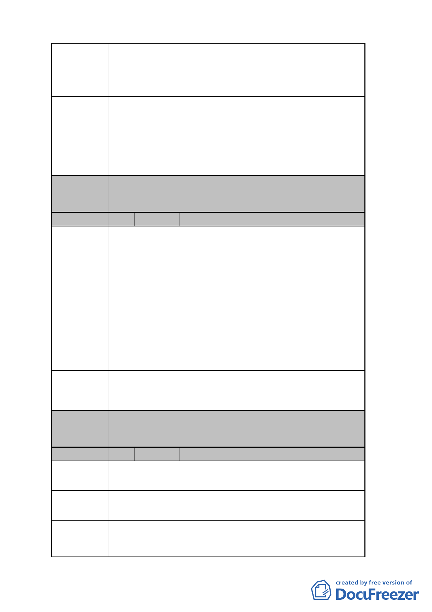

建議辦法
委員會
決議
用。
2.周邊停車位嚴重不足。
3.除三元街外，周邊計畫道路均未打通，影響社區居民公
共通行及公共安全。
1.積極贊同本地區辦理都市更新，納入龍興大樓整體開
發，並增設停車位，以解決龍興區民活動中心使用不變
及周邊地區停車位嚴重不足之問題。
2.未開闢之計畫道路，建議市府儘速打通，其中和平西路
2 段 90 巷開闢後連通和平西路及三元街兩條 30 公尺道
路，以利居民公共通行，並保障居民生命財產安全。
本案有關申請停獎事宜依現行規定辦理。
編號
陳情理由
建議辦法
委員會
決議
2 陳情人 金山石建設股份有限公司
本案響應政府政策積極參與，申請『臺北好好看』容
積獎勵值約 16%，公展版草案中，卻因限縮開挖率（55
％）及退縮 1.5m 開挖之新增規定，嚴重影響本案停車位
之設置，使得原條件可達停獎 20％幾乎歸零。換言之，
原希望藉由參與『臺北好好看』提昇獎勵效益，促使本基
地複雜難解而數十年來一直無法實際推動之都市更新案
得以啟動，但如今卻因外加條件限制後適得其反。『臺北
好好看』將難以推動且都市更新案亦隨即呈停滯狀態，情
況頗為嚴重。同時，最近也因為該外加限制規定，致使本
案實施者面臨對已簽署私有土地面積近 80%同意書之眾
多所有權人(約計人數 141 人) 造成跳票情形。
回歸技術規則，針對地下層開挖勿法外設限，取消限
制地下層開挖率（55％）及沿街退縮 1.5 公尺始得開挖之
規定。
本案有關「地下開挖率」比照其他臺北好好看申請案件審
查之共識，依現行規定辦理，不另行規定。
編號
陳情位置
陳情理由
建議辦法
3 陳情人 陳梨
中正區永昌段四小段 89 地號
中正區和平西路 2 段 70 巷 30 號
龍興宮歷史悠久，為社區居民經常聚會場所，但礙於
法令限制一直無法正式登記。
1.期能經由本更新案，協助龍興宮完成合法登記。
2.請針對本案特殊需求，放寬各項法令限制，免於影響本
- 24 -